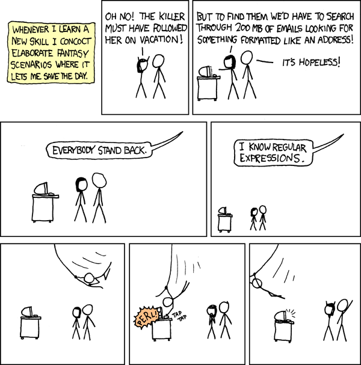

W poprzednich rozdziałach kilka razy szukaliśmy różnych wzorców w łańcuchach. W rozdziale 4 wydobywaliśmy daty z łańcuchów wypisując precyzyjnie pozycje, na których znajdowały się liczby będące częścią daty. Później w rozdziale 6 oglądaliśmy wyjątkowo paskudne fragmenty kodu do znajdowania wybranych typów znaków w łańcuchach, np. znaków, które w kodzie HTML trzeba zastąpić encjami.
Wyrażenia regularne to język do opisywania wzorców w łańcuchach. Jest to niewielki, ale osobny język, który został wbudowany w JavaScript (a także inne języki programowania). Kod w tym języku nie jest zbyt czytelny, a rozbudowane wyrażenia regularne są wręcz niemożliwe do odczytania. Jest to jednak bardzo przydatne narzędzie pozwalające znacznie uprościć operacje związane z obróbką łańcuchów.
Podobnie jak łańcuchy wpisuje się w podwójnych cudzysłowach, wyrażenia regularne pisze się między ukośnikami (/). To oznacza, że jeśli w wyrażeniu jest użyty ukośnik, to trzeba zastosować unik.
var slash = /\//; show("AC/DC".search(slash));
Metoda search działaniem przypomina indexOf, tylko zamiast łańcucha szuka wyrażenia regularnego. Wzorce definiowane za pomocą wyrażeń regularnych mają pewne właściwości, których pozbawione są łańcuchy. Po pierwsze niektóre ich elementy mogą pasować do więcej niż jednego znaku. W rozdziale 6 aby wydobyć znaczniki z dokumentu musieliśmy znaleźć pierwszą gwiazdkę lub klamrę w łańcuchu. Taką operację można wyrazić następująco:
var asteriskOrBrace = /[\{\*]/; var story = "Spostrzegliśmy *gigantycznego lemura* zwisającego z gałęzi."; show(story.search(asteriskOrBrace));
Znaki [ i ] w wyrażeniach regularnych mają specjalne przeznaczenie. Można między nimi wpisywać znaki i wówczas wyrażenie takie oznacza „którykolwiek z tych znaków”. W wyrażeniach regularnych specjalne znaczenie ma większość znaków nie alfanumerycznych, dlatego dobrym pomysłem jest poprzedzanie ich zawsze ukośnikiem1, gdy są używane jako zwykłe znaki.
Dla często używanych zbiorów znaków dostępne są specjalne skrócone formy zapisu. Kropka (.) oznacza „dowolny znak nie będący znakiem nowego wiersza”, „d” z ukośnikiem (\d) oznacza „dowolna cyfra”, „w” z ukośnikiem (\w) pasuje do każdego znaku alfanumerycznego (nie wiedzieć czemu zalicza się do nich też znak podkreślenia), a „s” z ukośnikiem (\s) pasuje do wszelkich białych znaków (tabulatora, nowego wiersza, spacji).
var digitSurroundedBySpace = /\s\d\s/; show("1a 2 3d".search(digitSurroundedBySpace));
Znaki „d”, „w” oraz „s” z ukośnikiem mają też odpowiedniki w postaci wielkich liter, które oznaczają ich odwrotność. Na przykład \S pasuje do każdego znaku nie będącego białym znakiem. Gdy używany jest nawias [], wzorzec można odwrócić stawiając przed nim znak ^:
var notABC = /[^ABC]/; show("ABCBACCBBADABC".search(notABC));
Jak widać, sposób używania znaków w wyrażeniach regularnych sprawia, że za pomocą tych wyrażeń można tworzyć bardzo krótkie i trudne do czytania wzorce.
Napisz wyrażenie regularne dopasowujące datę w formacie "XX/XX/XXXX", gdzie znaki X są cyframi. Wypróbuj je na łańcuchu "urodzeni 15/11/2003 (matka Spot): White Fang".
Czasami trzeba sprawdzić, czy wzorzec zaczyna się na początku lub kończy na końcu łańcucha. Do tego służą znaki specjalne ^ i $. Pierwszy dopasowuje początek łańcucha, a drugi koniec.
show(/e+/.test("ble")); show(/^e+$/.test("ble"));
Pierwsze z powyższych wyrażeń pasuje do każdego łańcucha zawierającego znak e, a drugie tylko do tych łańcuchów, które w całości składają się ze znaków e.
Warto podkreślić, że wyrażenia regularne są obiektami i mają metody. Metoda test zwraca wartość logiczną oznaczającą czy dany łańcuch pasuje do wyrażenia regularnego.
Kod \b dopasowuje „granice słów”, którymi mogą być znaki przestankowe, białe znaki oraz początek i koniec łańcucha.
show(/kat/.test("kontaktenacja")); show(/\bkat\b/.test("konkatenacja"));
Można zezwolić, aby wybrane części wzorca powtarzały się pewną liczbę razy. Umieszczenie gwiazdki (*) za elementem oznacza, że może się on powtarzać dowolną liczbę razy, także zero. Plus (+) oznacza, że element może powtarzać się przynajmniej raz. Znak zapytania (?) oznacza, że element jest opcjonalny, tzn. może występować zero razy lub raz.
var parenthesizedText = /\(.*\)/; show("Jego (leniwca) pazury były gigantyczne!".search(parenthesizedText));
W razie potrzeby za dopuszczalną liczbę powtórzeń elementu można dokładnie określić przy użyciu klamry. Liczbę tę należy wpisać w klamrze, np. {4}. Jeśli wpisze się dwie liczby rozdzielone przecinkiem (np. {3,10}), oznacza to, że element musi występować przynajmniej tyle razy, ile wynosi pierwsza liczba i maksymalnie tyle razy, ile wynosi druga. Analogicznie {2,} oznacza dwa wystąpienia lub więcej, a {,4} oznacza cztery lub mniej.
var datePattern = /\d{1,2}\/\d\d?\/\d{4}/; show("urodzeni 15/11/2003 (matka Spot): White Fang".search(datePattern));
Zapisy /\d{1,2}/ i /\d\d?/ oznaczają „jedna lub dwie cyfry”.
Napisz wzorzec dopasowujący adresy e-mail. Dla uproszczenia przyjmij założenie, że przed i za znakiem @ mogą znajdować się tylko znaki alfanumeryczne oraz znaki . i - (kropka i łącznik), natomiast w ostatniej części adresu, zawierającej kod kraju za ostatnią kropką, mogą znajdować się tylko znaki alfanumeryczne i ich liczba musi wynosić dwa lub trzy.
Części wyrażeń regularnych można grupować za pomocą nawiasów. Dzięki temu można stosować * i inne znaki do więcej niż jednego znaku. Na przykład:
var cartoonCrying = /boo(hoo+)+/i; show("Następnie wykrzyknął „Boohoooohoohooo”".search(cartoonCrying));
Skąd się wzięła litera i na końcu tego wyrażenia regularnego? Za ukośnikiem zamykającym wyrażenie można dodawać opcje dla tego wyrażenia. Litera i tutaj oznacza, że wielkość liter nie ma znaczenia, dzięki czemu mała litera b we wzorcu pasuje do wielkiej litery B w łańcuchu.
Pionowa kreska (|) umożliwia wybór jednego spośród dwóch elementów. Na przykład:
var holyCow = /(sacred|holy) (cow|bovine|bull|taurus)/i; show(holyCow.test("Sacred bovine!"));
Często szukanie wzorca jest tylko pierwszym krokiem do wydobycia czegoś z łańcucha. W poprzednich rozdziałach ciągi z łańcuchów były wydobywane za pomocą metod indexOf i slice. Teraz znając wyrażenia regularne możemy zamiast nich używać metody match. Przy porównywaniu łańcucha z wyrażeniem regularnym można otrzymać w wyniku wartość null, jeśli dopasowanie nie uda się albo tablicę dopasowanych łańcuchów.
show("Nie".match(/Tak/)); show("... tak".match(/tak/)); show("Wielka małpa".match(/wielka (\w+)/i));
Pierwszy element w zwróconej tablicy zawsze jest tą częścią łańcucha, która pasowała do wzorca. Jak pokazuje ostatni przykład, jeśli we wzorcu znajdują się części w nawiasach, dopasowane przez nie części również zostają dodane do tablicy. To bardzo ułatwia wydobywanie kawałków łańcuchów.
var parenthesized = prompt("Powiedz mi coś", "").match(/\((.*)\)/); if (parenthesized != null) print("Umieściłeś w nawiasie „", parenthesized[1], "”");
Napisz jeszcze raz funkcję extractDate z rozdziału 4. Funkcja ta, gdy przekaże się jej łańcuch, szuka czegoś, co ma określony format daty. Jeśli uda się znaleźć taką datę, zapisuje wartości w obiekcie Date. W przeciwnym razie zgłasza wyjątek. Niech akceptuje daty, w których dzień lub miesiąc zostały zapisane przy użyciu tylko jednej cyfry.
Metoda replace wartości łańcuchowych, którą widzieliśmy już w rozdziale 6, może przyjmować wyrażenie regularne jako pierwszy argument.
print("Borobudur".replace(/[ou]/g, "a"));
Zwróć uwagę na znak g za wyrażeniem regularnym. Litera ta oznacza „globalny”, czyli że każda część łańcucha, która pasuje do wzorca ma zostać wymieniona. Gdyby nie było litery g, zamieniona zostałaby tylko pierwsza litera o.
Czasami trzeba zachowywać części zamienionych łańcuchów. Na przykład mamy długi łańcuch zawierający imiona i nazwiska, po jednej parze na wiersz, w formacie „Nazwisko, Imię”. Chcemy zamienić imiona i nazwiska miejscami oraz usunąć przecinki, aby uzyskać format „Imię Nazwisko”.
var names = "Picasso, Pablo\nGauguin, Paul\nVan Gogh, Vincent"; print(names.replace(/([\w ]+), ([\w ]+)/g, "$2 $1"));
Ciągi $1 i $2 w łańcuchu zamiany odnoszą się do części znajdujących się we wzorcu w nawiasach. Ciąg $1 zostaje zastąpiony tekstem dopasowanym do pierwszej pary nawiasów, a $2 — do drugiej itd. aż do $9.
Jeśli nawiasów jest więcej niż 9, ta metoda nie zadziała. Ale jest jeszcze inny sposób na zamianę łańcuchów, który może być przydatny także w kilku innych trudnych sytuacjach. Gdy drugi argument metody replace jest funkcją, a nie łańcuchem, funkcja ta jest wywoływana za każdym razem, gdy zostanie znalezione dopasowanie i dopasowany tekst jest zastępowany tym, co zwraca ta funkcja. Argumenty przekazane do funkcji są dopasowywanymi elementami, podobnie do wartości w tablicach zwracanych przez metodę match pierwszy jest całym dopasowaniem, a za nim znajdują się argumenty dla każdej „nawiasowej” części wzorca.
function eatOne(match, amount, unit) { amount = Number(amount) - 1; if (amount == 1) { unit = unit.slice(0, unit.length - 1); } else if (amount == 0) { unit = unit + "s"; amount = "no"; } return amount + " " + unit; } var stock = "1 lemon, 2 cabbages, and 101 eggs"; stock = stock.replace(/(\d+) (\w+)/g, eatOne); print(stock);
Ostatnią sztuczkę można wykorzystać do poprawienia funkcji wstawiającej encje HTML z rozdziału 6. Przypomnę, jak wyglądała:
function escapeHTML(text) { var replacements = [[/&/g, "&"], [/"/g, """], [/</g, "<"], [/>/g, ">"]]; forEach(replacements, function(replace) { text = text.replace(replace[0], replace[1]); }); return text; }
Napisz nową funkcję escapeHTML, która robi to samo, co stara, ale wywołuje funkcję replace tylko raz.
Czasami wzorzec, którego trzeba będzie używać do dopasowywania nie jest znany podczas pisania kodu. Wyobraź sobie, że piszesz bardzo prosty filtr brzydkich słów dla tablicy ogłoszeń. Chcesz, aby przepuszczał tylko te ogłoszenia, które nie zawierają wulgaryzmów. Administrator tablicy może zdefiniować listę słów, których nie akceptuje.
Najlepszym sposobem na sprawdzenie czy w tekście znajdują się słowa z pewnego zbioru jest użycie wyrażeń regularnych. Jeśli lista brzydkich słów zostanie zapisana w postaci tablicy, to wyrażenie regularne możemy utworzyć tak:
var badWords = ["małpa", "krowa", "osioł", "baran", "kaszalot"]; var pattern = new RegExp(badWords.join("|"), "i"); function isAcceptable(text) { return !pattern.test(text); } show(isAcceptable("Mmmm, baranina.")); show(isAcceptable("A to stara baranica"));
Moglibyśmy dodać wzorce \b wokół słów, dzięki czemu wyrażenia typu „baranina” nie byłyby traktowane jako brzydkie. To jednak spowodowałoby również przepuszczenie drugiego przypadku, co chyba nie jest pożądane. Bardzo trudno jest utworzyć dobry filtr wulgaryzmów i zazwyczaj filtry takie są zbyt denerwujące, żeby je stosować.
Pierwszy argument konstruktora RegExp jest łańcuchem zawierającym wzorzec, a w drugim można dodać opcję ignorowania wielkości liter lub „globalności”. Tworząc łańcuch wzorca należy uważać na ukośniki wsteczne. Ponieważ normalnie ukośniki te są usuwane podczas interpretowania łańcucha, wszystkie takie znaki, które mają znajdować się w wyrażeniu muszą zostać zastąpione specjalną sekwencją:
var digits = new RegExp("\\d+"); show(digits.test("101"));
Najważniejsze jeśli chodzi o wyrażenia regularne jest to, aby wiedzieć, że istnieją i że mogą bardzo pomóc w napisaniu kodu do obróbki łańcuchów. Są jednak tak zawiłe, że zanim użyjesz ich pierwszy raz, to pewnie będziesz miał z dziesięć nieudanych podejść. Nie poddawaj się, a już wkrótce będziesz pisać wyrażenia przypominające hieroglify jakiegoś czarnoksiężnika.
(Komiks autorstwa Randalla Munroe’a.)
[ ], ale lepiej jest ich użyć mimo to, aby nie musieć o tym pamiętać.